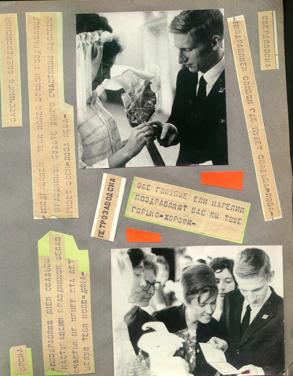
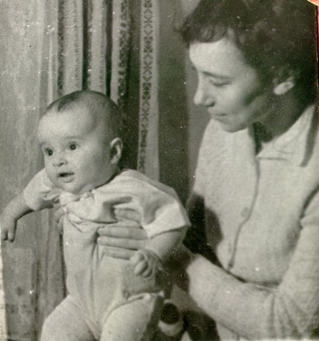
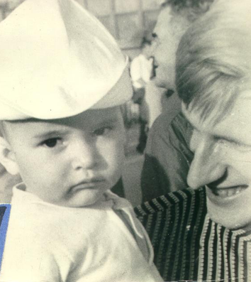
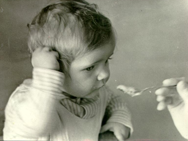
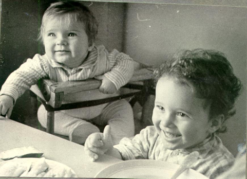
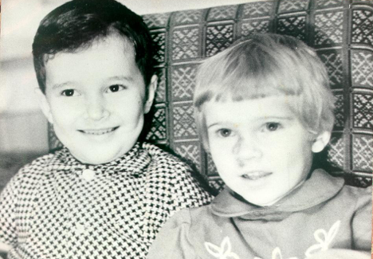
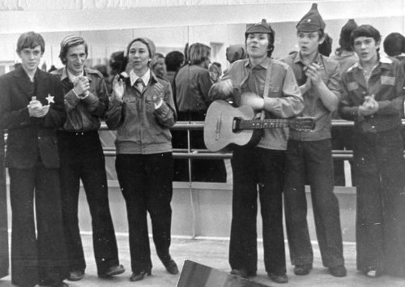
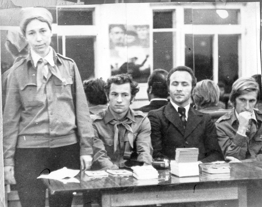
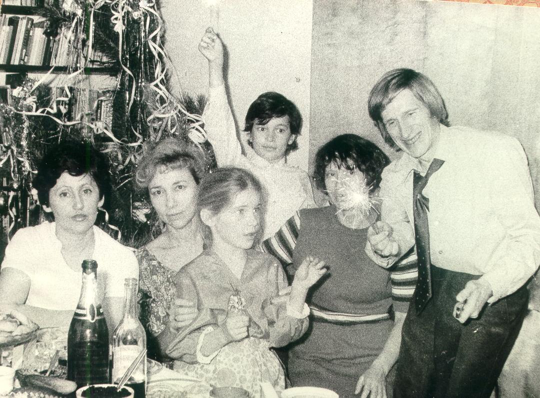

Мы умели дружить и о чём-то совсем не постельном,
Лёжа рядом, часами с тобой говорить по ночам.
К. Симонов. Поэма «Пять страниц»
Это было под Костромой, в довольно глухой деревне, куда отправили наш 1 курс «на картошку»: тебя как студента, меня как куратора. Расселили по квартирам небольшими группами. По вечерам мы с тобой обходили всех. Проблем не было, потому просто общались с ребятами, читали стихи, иногда пели. На нашем курсе практически не было выпускников того года. Это были вожатые «Артека» и «Орленка», приехавшие из разных концов нашей страны получить диплом методиста комсомольской и пионерской работы.
Если была подходящая обстановка и соответствующее настроение, я читала по памяти эту поэму К. Симонова, я ее очень любила… и не знала, не понимала, что пророчу свое будущее…

Да, мы умели дружить… Это ведь про нас сказано:
Это дружба не та, за которой размолвку скрывают.
Это самая первая, самая верная связь.
Это дружба - когда о руках и губах забывают,
Чтоб о самом заветном всю ночь говорить, торопясь.
Нам было о чем говорить – у нас всегда было общее дело. И всегда было много друзей… Еще летом, на вступительных экзаменах, члены студенческой приемной комиссии, обеспокоенные тем, что ребята, давно закончившие школу, но очень нужные на этом факультете, не справятся с сочинением, познакомившись со мной, попросили их выручить. Меня закрыли в каком-то кабинете и приносили мне сочинения абитуриентов. Я проверяла, исправляла карандашом ошибки, и у меня их забирали. Меня не мучила совесть: это были прекрасные пионерские вожатые, и я посчитала своим долгом помочь им…
Сам-то ты в этом не нуждался, хотя после школы проучился три года в Университете на общетехническом факультете. С грамотностью было все в порядке, а содержание… Ты говорил: «Любую тему сочинения начну с фразы: я подхожу к книжной полке…» Никто и не сомневался, что ты поступишь. Ты был спокойным, уверенным и надежным.
Еще не став мужчиной, поскольку не допускал ничего лишнего, хотя мы жили в одной комнате и спали на одном диване, ты вел себя по-мужски, когда приехали в Кострому твои родители, обеспокоенные твоим желанием жениться, и сразу после «картошки» мы поехали в Пермь, к моим родителям. Посидев за праздничным столом (это был день рождения мамы) и получив папино «благословение» («Вы любите друг друга? Вы все решили? Тогда зачем вам наше разрешение?»), мы помчались к друзьям – у Тамары Кулеминой собрались на ночной разговор коммунары, и я, счастливая, объявила: «Не будет теперь Аллы Басс, будет Алла Дворжицкая». Вот было ликование!
2 октября, вернувшись в Кострому, мы пошли в ЗАГС подавать заявление. Хорошо помню, как возвращались, медленно бредя по улице, какие-то растерянные и обескураженные. Навстречу – Роза Смирнова: «Ребят, вы чего? Что-то случилось?» - «Мы подали заявление…» - «Так это ж здорово! Надо отметить! Так. Идем в ресторан!» - «Да ты что? Мы после колхоза даже постирать ничего не успели» - «Ничего. Сейчас все организуем!» И она действительно все организовала: застирали ворот и манжеты рубашки для Коли, высушили их утюгом, достали из не разобранных еще вещей мой костюм и отправились…
Параллельно с началом занятий шла подготовка к свадьбе. Проблему с приездом родителей решили просто. Одним позвонили и сказали: те родители приедут, а вы? То же самое – другим родителям… Накануне свадьбы встретили и проводили в гостиницу одних, затем – других, представили друг другу в одном из номеров. Один папа ставит на стол бутылку коньяка, другой – вторую, точно такую же. Один папа спрашивает другого: «За какую команду болеешь?» Ответа мы слушать не стали – исчезли, успокоенные, что все в порядке…
На свадьбу приехали родные и близкие из Перми, Петрозаводска, Новосибирска, Свердловска. Наши костромские друзья все организовали, я вообще мало что помню. Вдруг выяснилось, что комендант общежития не разрешает проводить столь несерьезное мероприятие в подведомственном ему заведении… Пришлось папе идти к ректору… Конечно, разрешили.


Жизнь казалась прекрасной: нам было интересно учить и учиться, мы хорошо себя чувствовали и в студенческом, и в педагогическом коллективах, нам не было тесно в 6-метровой комнате, и мы ждали сына…
А потом все рухнуло. Миф о замечательном факультете развеялся, серии скандалов и разборок на самом высоком уровне не было конца, и, дотянув до конца учебного года, ты отправил меня в Пермь, а сам остался отправлять в Петрозаводск контейнер.
К нашим друзьям и твоим родителям мы вернулись с новорожденным сыном. И жизнь снова наладилась.


Саньке было всего 3 месяца, когда я вышла на работу, ты вернулся в университет. Потом родилась Инка,
мы получили комнату в новом доме, и друзья снова зачастили в наш дом…

Помню, никак не могли справить новоселье, на котором так настаивали родственники. Трижды назначали дату и трижды отменяли из-за болезни детей. Тогда, рискуя обидеть многочисленную родню, мы сказали: никаких новоселий, кто захочет – дорогу найдет… Нашли только твои родители и сестра…
Зато друзья поступили просто: передали мне записку, что после весеннего сбора, прямо с прощального вечера, заявятся к нам на салат и пирожки…
Наша маленькая кухонка вмещала очень много людей. Детей укладывали рано, и шумные сборища иногда прерывались внезапным появлением то одного ребенка, то другого. Друзья называли это «горшечной эпопеей». Как мы гордились своими детьми! И как завидовали нам друзья, требуя, чтобы мы поделились опытом: полный комплект – сын и дочь, сын – темноволосый с черными глазами, дочь – светленькая, сероглазая… А мы отшучивались: так было задумано. И это было правдой.

Ты много занимался детьми, и я благодарна тебе за это. Очень помогло общение с семьей Никитиных – их методы раннего развития детей. И дети радовали нас своей самостоятельностью и сообразительностью. Как мы были обескуражены, когда, повесив в комнате карту и обсудив, как будем объяснять, что это такое, услышали от них: «А кто карту повесил?»
А как впервые за много лет мы, взрослые, могли спокойно посидеть за столом на Инкином четырехлетии, потому что Санечка занял всех детей показом диафильмов и самостоятельным чтением текста по памяти.

А Иннулька на следующее утро объявила, что теперь ее не надо провожать в садик, она будет ходить одна: «Вы ведь сами говорили, что я теперь взрослая…» И ходила ведь! Благо, садик был рядом, за забором. Но ведь зима, темень. Она шла, а я украдкой наблюдала, как дошла, как разделась. Гордилась она собой, конечно. И когда однажды «сопровождал» ее ты, кто-то из родителей спросил: «Что, Инночка, тебя больше не отпускают одну?», она, оглянувшись и увидев тебя, тут же ответила: «Нет, он просто решил проверить, правильно ли я юбку застегнула…»
А поездка в Новосибирск… Я не хотела никуда ехать – так устала за год. Ты уговорил, обещая мне безмятежное лежание с книгой на верхней полке, и дети дружно обещали тебе меня не беспокоить. Это было незабываемое путешествие. Я наблюдала, как ты развлекал их, словно фокусник, вынимая из ниоткуда то механические карандаши, то проволочные головоломки… Я сама видела их впервые. Так суметь занять детей в замкнутом пространстве купе в течение трех суток… Ты вызывал во мне восхищение, и если бы я не любила тебя, за эту поездку непременно бы влюбилась. Но главное – подружились с сибиряками наши дети и дружат до сих пор.

А потом Санька пошел в школу – стал совсем самостоятельным… Как-то взлетаю на наш третий этаж, подхожу к квартире. На двери записка: «КЛЮЧ ПАД КОВРИКОМ». Достаю, пытаюсь открыть. А она не закрыта… Это пустяки – красть у нас нечего. Где сын? Наступало время, когда он мог сказать, что он у бабушки, ей – что у нас… А работа у нас связана с командировками: неделю тебя нет, неделю – меня…
Найти выход помог случай. Однажды, возвращаясь из отпуска, мы задержались в Москве у Хилтуненов… Хил только что вернулся из Белгородской области и с таким увлечением рассказывал о необыкновенной Яснозоренской школе им. Ленинского комсомола, что мы загорелись. Подкупало все: поселок городского типа и нормальное жилье, интересная работа, а главное – под одной крышей 5 школ - общеобразовательная, спортивная, музыкальная, хореографическая, художественная! Санька уже закончил 1 класс, и мы разрывались между работой, его школой и досугом, детским садом и различными кружками для детей. А там – такое чудо! И мы снова заказали контейнер…


Мама поехала с нами, и, как всегда, очень выручила нас, помогла с налаживанием быта (мы пропадали на работе) и уехала. И опять все казалось чудесным: и поселок, и школа, и люди встретили хорошо. Учительская молодежь потянулась к нам на огонек, и скоро сложились традиционные воскресные посидели с чаем и булочками.
Однако директору школы мы пришлись не ко двору, и в конце учебного года он предложил мне на выбор директорство в одной из школ. Я отказалась и осталась его заместителем по воспитательной работе, что его как раз больше всего и не устраивало. Нас, впрочем, тоже все не устраивало. Эта школа, так красочно расписанная журналистами, тоже оказалась мифом…


Пока ты творил, выпуская с ребятами замечательные газеты на полстены, а я еще имела возможность заниматься любимым делом, пока мы видели огонек в ребячьих глазах после осеннего сбора, который вытянули КЮКовцы, мы еще держались, но потом стало совсем глухо. Мы стали неугодными, с нами стало опасно общаться, остались только те, кто не боялся потерять работу или был верен дружбе, как Путивцевы.

Вот тогда и начались неурядицы в семье. Появилось раздражение, недовольство друг другом. Я-то была занята: я была озабочена, чем накормить, во что одеть детей. Бралась за любую подработку, даже подменяла тебя как воспитателя в интернате и не понимала, что ты-то ничем не занят… совсем ничем… Нет ничего хуже безделья, оно человека развращает. И мы тебя окончательно потеряли, когда уехали с детьми в пионерский лагерь, где я все лето проработала на две ставки, а тебя оставили в этом болоте – школьном лагере…
Потом ты уехал от нас, а мы с детьми еще год загнивали в этой клоаке сплетен, домыслов, шепотков. Неудивительно, что в тот год мы столько болели… Я тщетно пыталась найти где-нибудь работу с жильем, но узнала обо всем мама и вытащила нас оттуда в свою коммуналку…
Я знаю, тебе тоже было нелегко, но что может сравниться с тем, как мы жили на мамину пенсию в 65 рублей, потому что меня не прописывали и не брали на работу. Был только один выход – дворником, и я не колеблясь согласилась, но мама не отпустила, а перечить ей я не могла.
Потом все устроилось – снова помогли друзья…
Прошли годы. И я поняла: нас держало только общее дело, даже не дети, как это обычно бывает. Пока мы были заняты одним делом, нам было хорошо вместе, мы нуждались друг в друге, помогали друг другу, мы болели за дело, которому служили. Когда его не стало, оказалось, что мы не нужны друг другу. Быть только мужем и женой мы не смогли – не сумели…
К твоему последнему юбилею я отправила тебе телеграмму: «Друг мой Колька… Я давно простила тебя… Прости и ты». Ты не ответил. Не получил ее? Не захотел ответить? Не простил? Теперь я никогда об этом не узнаю…
Алла Басс (Дворжицкая-Ларина).